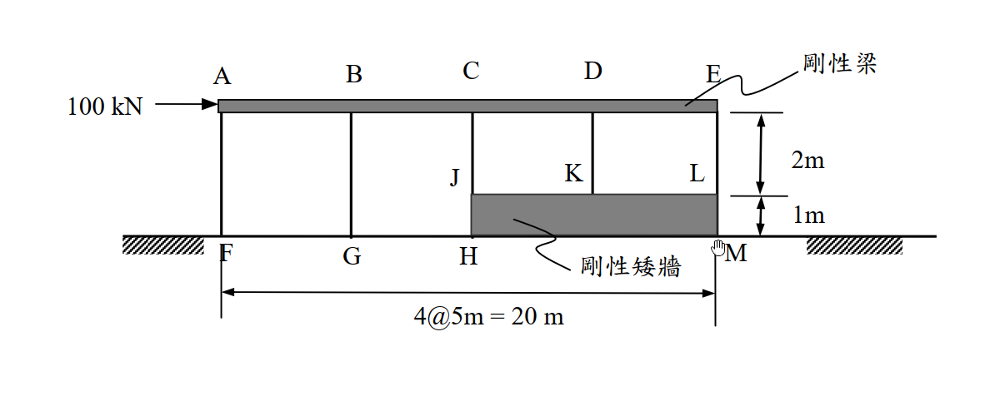
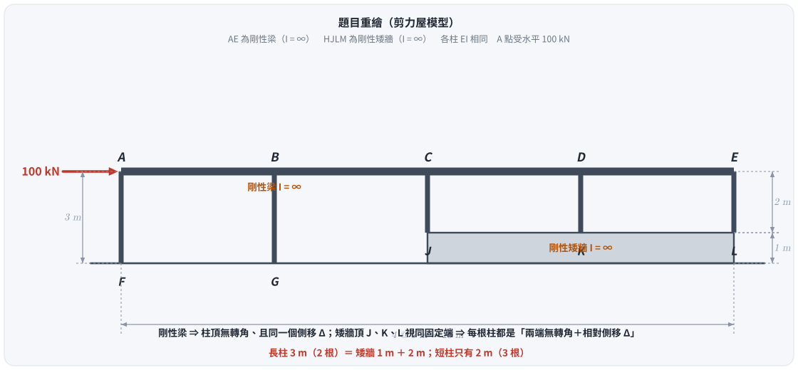
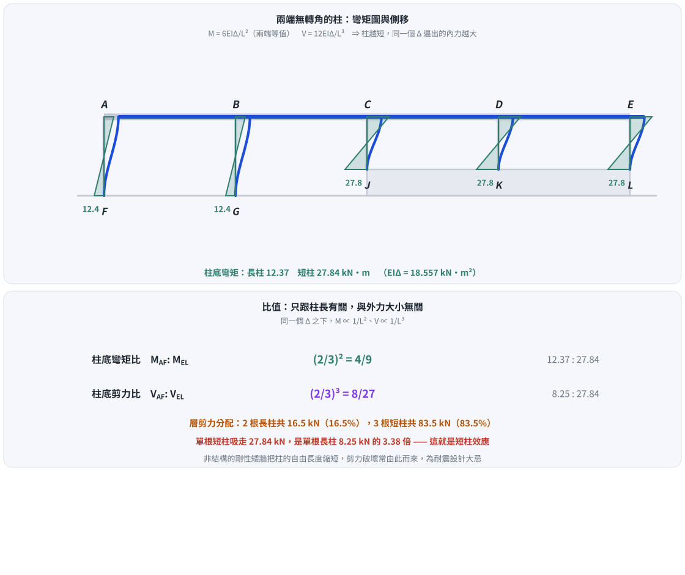

考題編號：SA-2006-4
主分類： SA-U2-3 靜不定結構之傾角變位法
副分類： 無
分析法： 傾角變位法
標籤： 傾角變位法 剪力房屋 剛性梁 剛性矮牆
1. 原始題目重述 (Problem Restatement)
如圖示，一建物結構受 $100\text{ kN}$ 之水平橫力。假設該建物之 AE 構件為剛性梁（慣性矩 $I = \infty$），HJLM 構件為剛性矮牆（慣性矩 $I = \infty$）。各柱之彈性模數（E 值）與慣性矩（I 值）均為常數。試以傾角變位法（slope-deflection method）計算長柱 AF 與短柱 EL 二者柱底彎矩之比值，以及二者柱底剪力之比值。不計構件之自重。（25 分）


圖 1 題目重繪（向量版）。這張圖攔的是柱長誤判：矮牆之上是 $2\text{ m}$，但左側長柱從地面起算是 $2+1 = 3\text{ m}$ —— 代錯一個長度，兩個比值都會錯。
圖說：結構總長 $20\text{ m}$，分為 4 跨各 $5\text{ m}$。頂部為剛性梁 AE。底部左側兩跨為平地，柱 AF、BG 高度為 $3\text{ m}$；右側兩跨有高度 $1\text{ m}$ 之剛性矮牆 HJLM，因此其上的柱 CJ、DK、EL 高度為 $2\text{ m}$。A 點受水平向右 $100\text{ kN}$ 外力。
2. 考題核心精神與出題者意圖 (Core Concepts & Examiner's Intent)
本題主要測驗考生對於傾角變位法在特殊邊界條件（剛性構件）下之應用。
出題者意圖包含：
- 剛性構件的物理意義轉譯：剛性梁（$I = \infty$）代表其上各節點不發生轉角（$\theta = 0$）；剛性矮牆代表其上之節點（J, K, L）視同固定端（無轉角、無位移）。
- 剪力房屋（Shear Building）模型：在忽略柱軸向變形的前提下，結構僅產生單一自由度的側向平移（$\Delta$）。
- 側移、彎矩與剪力的關係：能熟練地將側移量 $\Delta$ 代入傾角變位方程式求出桿端彎矩，並利用柱之平衡求出對應的樓層剪力。
3. 解題戰略地圖與陷阱分析 (Strategic Roadmap & Trap Analysis)
作戰計畫：
- 確立邊界條件：由剛性梁可知 $\theta_A = \theta_B = \theta_C = \theta_D = \theta_E = 0$；由剛性矮牆及固定基礎可知 $\theta_F = \theta_G = \theta_J = \theta_K = \theta_L = 0$。
- 假設變位：設剛性梁發生向右之側向平移 $\Delta$。
- 建立傾角變位方程式：分別對長柱（AF, BG，長 $3\text{ m}$）與短柱（CJ, DK, EL，長 $2\text{ m}$）列出桿端彎矩。
- 求出剪力：利用柱之自由體圖，由桿端彎矩求出各柱之剪力。
- 計算比值：直接將長柱與短柱的柱底彎矩及剪力相除，求得比值。亦可利用層剪力方程式 $\sum H = 0$ 解出 $\Delta$，進一步求得真實內力。
陷阱分析：
- 陷阱 1：高度誤判：左側長柱高度為 $2+1 = 3\text{ m}$，右側短柱高度為 $2\text{ m}$，若看圖不仔細容易代錯長度。
- 陷阱 2：符號約定混淆：傾角變位法中順時針為正，側移角 $\psi = \Delta / L$。向右側移時，$\psi > 0$，因此固定端彎矩為負值（逆時針），計算比值時應取絕對值或保留相同符號。
3.5 變數層次分析 (Variable Hierarchy Analysis)
最終目標
求出長柱 AF 與短柱 EL 的柱底彎矩比值與剪力比值
本題關鍵公式（依計算順序）
$$ M_{ij} = \frac{2EI}{L} \left( 2\theta_i + \theta_j - 3\frac{\Delta}{L} \right) $$
(傾角變位法基本式)
$$ \boxed{M_{bottom}} = -\frac{6EI\Delta}{L^2} $$
(兩端無轉角時之柱底彎矩)
$$ V = \frac{|M_{top} + \boxed{M_{bottom}}|}{L} = \frac{12EI\Delta}{L^3} $$
(柱剪力)
L1：題目直接給定
| 符號 | 數值 | 說明 |
|---|---|---|
| $L_1$ | $3\text{ m}$ | 長柱 AF、BG 的長度（$= 2 + 1$，含矮牆那 1 m） |
| $L_2$ | $2\text{ m}$ | 短柱 CJ、DK、EL 的長度 |
| $\theta_{top}$ | $0$ | 剛性梁限制頂端節點轉角 |
| $\theta_{bot}$ | $0$ | 基礎與剛性矮牆頂皆視同固定端 |
| $P$ | $100\text{ kN}$ | 水平外力（求比值時會消掉） |
L2：需知識點推導
| 符號 | 公式／來源 | 卡關? |
|---|---|---|
| $M_{FA}$ | $-\dfrac{6EI\Delta}{L_1^2}$ | |
| $M_{LE}$ | $-\dfrac{6EI\Delta}{L_2^2}$ | |
| $V_{AF}$ | $\dfrac{12EI\Delta}{L_1^3}$ | |
| $V_{EL}$ | $\dfrac{12EI\Delta}{L_2^3}$ |
L3：深層知識（不懂就卡住）
| 知識點 | 說明 | 卡關? |
|---|---|---|
| 剪力屋（Shear Building）特性 | 橫梁剛度無限大 ＋ 忽略柱軸向變形 $\Rightarrow$ 所有柱頂有相同的側移 $\Delta$ 且無轉角 | |
| 側向勁度 $\propto 1/L^3$ | 兩端無轉角的柱，$V = 12EI\Delta/L^3$；柱越短，同一個 $\Delta$ 逼出的剪力越大 |
4. 步驟化詳細計算過程 (Step-by-Step Detailed Calculation)
Step 1：確認結構邊界條件與變位自由度
因為頂部 AE 構件為剛性梁（$I = \infty$），且不計柱之軸向變形，故頂部各節點不發生轉角，且具有相同之側向位移量 $\Delta$：
$$ \theta_A = \theta_B = \theta_C = \theta_D = \theta_E = 0 $$
底部 F, G 為固定端；J, K, L 固定於剛性矮牆（$I = \infty$）上，故亦為固定端：
$$ \theta_F = \theta_G = \theta_J = \theta_K = \theta_L = 0 $$
Step 2：建立傾角變位方程式
設剛架向右側移 $\Delta$。各柱之 EI 值均為常數。
對於長柱 AF（$L_1 = 3\text{ m}$）：
$$ M_{AF} = \frac{2EI}{3} \left( 2\theta_A + \theta_F - 3\frac{\Delta}{3} \right) = \frac{2EI}{3} \left( - \frac{3\Delta}{3} \right) = -\frac{2}{3}EI\Delta $$
$$ M_{FA} = \frac{2EI}{3} \left( 2\theta_F + \theta_A - 3\frac{\Delta}{3} \right) = -\frac{2}{3}EI\Delta $$
對於短柱 EL（$L_2 = 2\text{ m}$）：
$$ M_{EL} = \frac{2EI}{2} \left( 2\theta_E + \theta_L - 3\frac{\Delta}{2} \right) = EI \left( - \frac{3\Delta}{2} \right) = -\frac{3}{2}EI\Delta $$
$$ M_{LE} = \frac{2EI}{2} \left( 2\theta_L + \theta_E - 3\frac{\Delta}{2} \right) = -\frac{3}{2}EI\Delta $$
Step 3：計算柱之剪力
取柱為自由體，由力矩平衡 $\sum M = 0$ 可得柱剪力 $V = -(M_{top} + M_{bottom}) / L$（定義向左之抵抗剪力為正）：
對於長柱 AF：
$$ V_{AF} = -\frac{M_{AF} + M_{FA}}{3} = -\frac{-\frac{2}{3}EI\Delta - \frac{2}{3}EI\Delta}{3} = \frac{4}{9}EI\Delta $$
對於短柱 EL：
$$ V_{EL} = -\frac{M_{EL} + M_{LE}}{2} = -\frac{-\frac{3}{2}EI\Delta - \frac{3}{2}EI\Delta}{2} = \frac{3}{2}EI\Delta $$
Step 4：計算彎矩與剪力之比值
-
柱底彎矩比值（長柱 AF 對短柱 EL）：
$$ \frac{M_{FA}}{M_{LE}} = \frac{-\frac{2}{3}EI\Delta}{-\frac{3}{2}EI\Delta} = \frac{2/3}{3/2} = \frac{4}{9} $$
因此，比值為 $\boxed{\frac{4}{9}}$。 -
柱底剪力比值（長柱 AF 對短柱 EL）：
$$ \frac{V_{AF}}{V_{EL}} = \frac{\frac{4}{9}EI\Delta}{\frac{3}{2}EI\Delta} = \frac{4/9}{3/2} = \frac{8}{27} $$
因此，比值為 $\boxed{\frac{8}{27}}$。
(註：本題雖給定外力 $100\text{ kN}$，但計算比值時 $\Delta$ 會被消去，故無需解出 $\Delta$。)
【補充計算】求解真實內力（驗證用）
全結構之層剪力平衡方程式：
$$ \sum H = 0 \implies V_{AF} + V_{BG} + V_{CJ} + V_{DK} + V_{EL} = 100\text{ kN} $$
其中長柱有 2 根（AF, BG），短柱有 3 根（CJ, DK, EL）：
$$ 2 \left( \frac{4}{9}EI\Delta \right) + 3 \left( \frac{3}{2}EI\Delta \right) = 100 $$
$$ \left( \frac{8}{9} + \frac{9}{2} \right) EI\Delta = 100 \implies \frac{97}{18} EI\Delta = 100 \implies EI\Delta = \frac{1800}{97}\text{ kN-m}^2 $$
代回可得真實值：
- $M_{FA} = -\frac{2}{3} \times \frac{1800}{97} = -12.37\text{ kN-m}$
- $M_{LE} = -\frac{3}{2} \times \frac{1800}{97} = -27.84\text{ kN-m}$
- $V_{AF} = \frac{4}{9} \times \frac{1800}{97} = 8.25\text{ kN}$
- $V_{EL} = \frac{3}{2} \times \frac{1800}{97} = 27.84\text{ kN}$
可再次驗證比例：
$M_{FA} / M_{LE} = 12.37 / 27.84 = 4/9$
$V_{AF} / V_{EL} = 8.25 / 27.84 = 8/27$

圖 2 短柱效應。這張圖攔的是「剪力按柱數平均分配」的直覺：$V \propto 1/L^3$，三根短柱吃掉了 83.5% 的層剪力，單根短柱扛的剪力是單根長柱的 $27/8 = 3.375$ 倍。
5. 關鍵爭議點與進階探討 (Critical Issues & Advanced Discussion)
-
橫向剛度（Lateral Stiffness）與柱高的關係：
在兩端皆為固定端（無轉角）的條件下，柱之側向勁度（Lateral Stiffness）與其長度的三次方成反比（$k \propto 1/L^3$），而柱端彎矩與其長度的二次方成反比（$M \propto 1/L^2$）。
本題中，短柱與長柱之長度比為 $2:3$。 -
彎矩比 = $(2/3)^{-2} = (3/2)^2 = 9/4$（即短柱是長柱的 $9/4$ 倍，長柱對短柱則為 $4/9$）。
-
剪力比 = $(2/3)^{-3} = (3/2)^3 = 27/8$（即短柱是長柱的 $27/8$ 倍，長柱對短柱則為 $8/27$）。
這說明了在側向力作用下，結構中的短柱效應（Short Column Effect）會使其吸收極大比例的剪力，極易發生剪力破壞，為耐震設計之大忌。本題的剛性矮牆即是造成短柱效應的典型非結構構件。 -
外力 $100\text{ kN}$ 的作用：
這是一個干擾資訊，當題目僅要求計算「比值」時，其結果僅與結構幾何與勁度分布有關，與外力大小無關。
CHANGELOG
| 日期 | 變更 | 原因 |
|---|---|---|
| 2026-07-02 | 初版解析 | — |
| 2026-08-26 | 補兩張向量圖；§3.5 的破折號清單改為表格；主分類名稱與 question_index.json 對齊 |
所有數值（彎矩比 $4/9$、剪力比 $8/27$、$EI\Delta = 1800/97$、$M_{FA} = -12.37$、$V_{EL} = 27.84$）經剛架有限元（剛性梁以極大 $EI$ 模擬）驗證全部正確，解析本身無誤 |
解析日期：2026-07-02 ｜ 複核＋補圖：2026-08-26（閉合式與剛架有限元逐項相符；向量圖腳本 gen_SA-2006-4.py，可重跑）